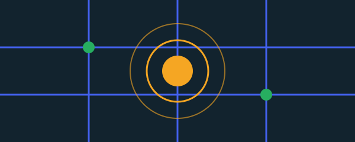

CiudadAlerta
Proyecto final · Programadores para la Paz
Plataforma comunitaria para reportar incidentes del barrio. Cualquier vecino registra una alerta con su ubicación en el mapa, la autoridad correspondiente la revisa y la comunidad puede comentarla. Tiene tres roles de usuario: ciudadano, administrador y autoridad.
Consta de tres repositorios: la API con 20 endpoints, la web y la aplicación móvil. Está en producción, con 67 pruebas automatizadas y despliegue continuo desde GitHub.
- Node.js
- Express
- MongoDB
- JWT
- React
- React Native
- Leaflet
- Railway
- Vercel